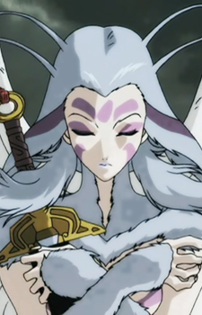
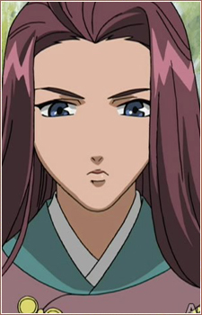

|  |
Kaiko |
|
Kaiko is Keiki's nyokai(female youma) who protects Keiki. She helps Youko with her ability to weild her sword. |
| |
Kenny |
- Pokemon Advanced Generations
|
Kenny is the Gym assistant for the Petalburg Gym. As a result, Kenny is very close to Norman and his family. |
| |
Nicole |
- Pokemon Advanced Generations
|
Nicole is the middle sibling of Natalie and Rita. They run the Pretty Petal flower shop near a lake full of Lotad. She is very knowledge when it comes to Berries and their effects. |
 |
Professor Aurea Juniper |
- Pokemon Black and White
- Pokemon Black and White: Rival Destinies
- Pokemon Black and White: Adventure in Unova
- Pokemon Black and White: Decolora Adventure
|
Professor Juniper is the resident professer of Unova region. She offers Pokemon to prosective trainers. She is a helpful woman, who tends to her research. |
 |
Rebecca Catalina |
- Fullmetal Alchemist: Brotherhood
- Fullmetal Alchemist: Brotherhood Specials
|
Rebecca Catalina is a Second Lieutenant under the command of Lieutenant General Grumman at the East City Headquarter. She is a close friend of Riza Hawkeye. She complain about her relationship with boys. Rebecca skilled soldier with combat abilites. |
|  |
Risai |
|
Risai is a general from Tai's Jou Province who ascends Mount Hou on a shouzan. She is a well known general. She is a sennin as a result of becoming a general of Jou. She and Taiki have a friendly relationship and still loyal to him and Gysousou. |
 |
Ryouko Miyazono |
- Your Lie in April
- Your Lie in April OVA
|
Ryouko Miyazono is the mother of Kaori Miyazono. She works with her husband at a bakery they own. |
| |
Toby |
|
Toby is tne trainer of three Maractus. his ultimate goal is to get the Maractus Trio become famous. He wants to bring the Musical back to his hometown. |